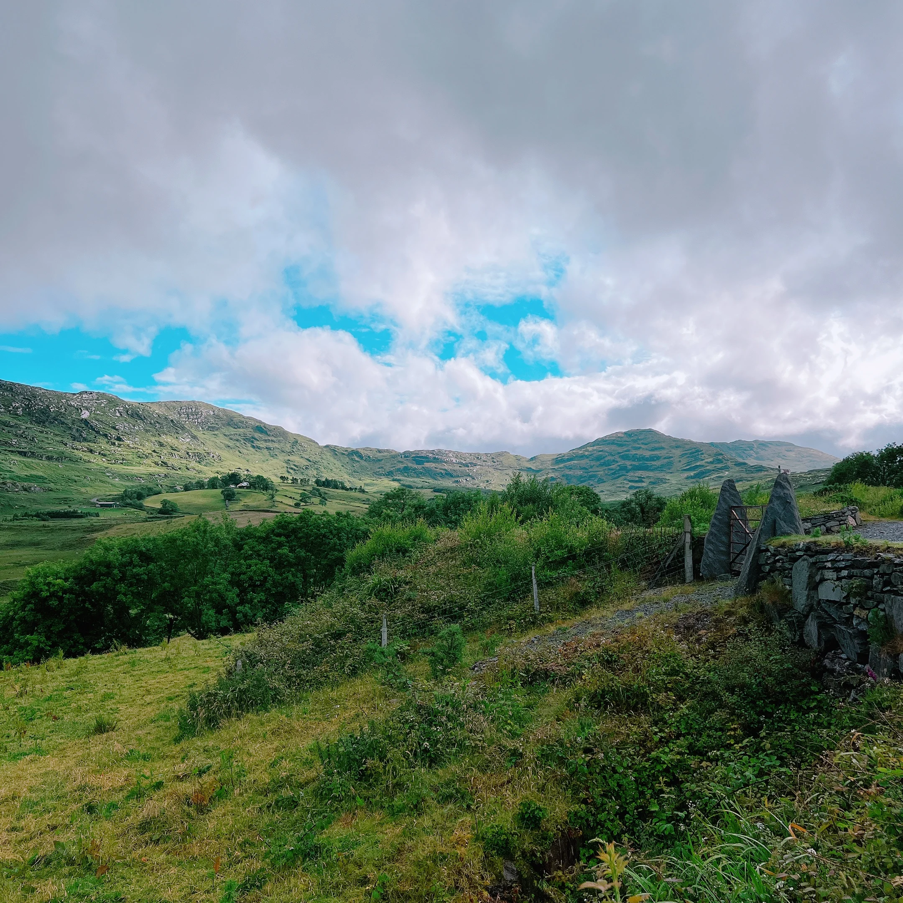

A quick introduction
If you are travelling on this departure with me as your Travel Director, this page is a simple welcome and a practical guide before we meet.
My job is to keep the journey running smoothly — clear communication before you travel, calm support once we are moving, and making sure you get the most from each stop along the way.
Where and when we meet
Our group meet-up is on Day 1 at 5:00 PM — please be in the hotel lobby, ready to head to the Welcome Dinner.
✈️ Airport transfers
Trafalgar offers complimentary Day 1 airport transfers at set times. Check your guest documents and welcome email for exact timings and where to meet.
If you have booked a private transfer through Trafalgar, those details are listed separately in your documents.
If you are not using those transfers, official taxis from the airport are safe and easy to find.
🧭 Meeting points
Open these links to view the two airport landmarks after baggage reclaim and customs:
🏨 Hotel check-in
Check-in is typically after 3:00 PM.
If you arrive earlier, you can leave luggage at reception and head out to relax or explore until your room is ready.
🕔 First group meeting
We meet at 5:00 PM in the hotel lobby/reception area. If you are arriving on one of the complimentary airport transfers, I will be around to welcome you — but there is nothing you need to do before then.
- Have your Dublin hotel address and Day 1 details easy to access.
- If your arrival is delayed, contact European Guest Services (EGS) as soon as possible.
- Be in the hotel lobby for the 5:00 PM group meet-up.

Before you travel
This tour starts in Dublin with your first group meeting on Day 1 before the Welcome Dinner, and finishes in Scotland. It is worth checking your joining information carefully and arriving with the basics well organised.
✅ Check your joining details
Your welcome email and official documents confirm your Dublin hotel, Day 1 meeting time and transfer details. Keep those details easy to access in case you need them.
✈️ Arrival plan
Check your latest airline updates and confirm how you are getting from the airport to the hotel (Trafalgar transfer, private transfer or taxi).
If your ETA changes (for a transfer), contact European Guest Services (EGS): +44 207 620 8900 / EuropeanGuestServices@ttc.com.
🛂 Keep essentials accessible
Have your passport, wallet, phone, charger and any medications easy to reach rather than buried in your suitcase.
📶 Staying connected
Hotel Wi‑Fi is common, and there is sometimes limited Wi‑Fi on the coach. WhatsApp works well on Wi‑Fi, so mobile roaming is optional.
What to expect from the weather
Weather across Ireland and Scotland can change quickly, sometimes within the same day. A forecast can give a general idea, but layers and a reliable waterproof are usually the better strategy.
🌤️ A practical reality
You might get a bit of everything in one day, which is fairly normal here. A couple of flexible layers will usually serve you better than worrying too much about the forecast.
🧥 Best approach
Bring a jacket you trust and comfortable layered clothing. Conditions can shift quickly, particularly in coastal and rural areas.
🥃 “Today’s rain is tomorrow’s whisky.”
– A local favourite in both Scotland and Ireland
What to pack
Most people find they pack more than they actually use. Comfortable, practical and easy to manage tends to win every time on this tour.
Essentials
- 👟 Comfortable walking shoes
- 🧥 Layered clothing for changing conditions
- ☔ A waterproof jacket
- 🎒 A small day bag
- 💧 Optional: bring a reusable water bottle (tap water is safe throughout the tour)
- 🔌 A UK Type G plug adapter (three rectangular prongs) View plug type
- 🎧 Optional: wired headphones with a 3.5mm jack to use with our walking-tour audio devices
Packing smarter
- 🧳 Pack for comfort and practicality, rather than for every possible scenario.
- 🧳 Your main suitcase is handled for you — one per person — so packing with that in mind helps keep travel days smooth.
- 👍 A manageable suitcase makes travel days smoother and still leaves room for a few things you may pick up along the way.
- 🌦️ Layers are key. Weather can change quickly, and it is not unusual to experience several conditions in one day.
Staying connected on tour
I use WhatsApp for updates, reminders and quick information throughout the tour. Joining is optional, but it is the easiest way to stay in sync while we are moving around.
-
1Download WhatsApp before you travel if you do not already use it.
Download WhatsApp here - 2Set up your profile and verify your number.
- 3Save my number in your phone from the welcome email or with the links above.
- 4Send me a quick WhatsApp message with your name so I know you are set up before the tour begins.
Practical notes
A few small realities can make the trip feel much smoother, from timekeeping and walking to money, hotels and the rhythm of touring.
🚏 The pace of the tour
This is a 15-day journey across Ireland, Northern Ireland and Scotland. There is good variety and some breathing room, but a few days still involve early starts, ferries or longer distances.
🚶 Walking
Expect uneven streets, stairs, city walking and days where comfortable shoes matter more than style points.
🏨 Hotel styles vary
Across Ireland and Scotland we use a mix of modern and historic properties. Room sizes and layouts can vary.
🍽️ Included meals
Breakfast is included daily and some dinners are provided. On included meal days, timings are set to keep the itinerary running smoothly, so punctuality is appreciated.
👥 Travelling as a group
Touring works best when everyone is mindful of shared timings and different travel styles. A good group makes a big difference.
🧑✈️ Your Driver
Your Driver plays a key role in both the safety and smooth running of each day. Driving hours are legally regulated, which is why timing on departure mornings matters — please be on the coach and ready to go.
💷 Currency
Ireland uses the Euro (€). Northern Ireland and Scotland use Pounds Sterling (£).
💳 Money & payments
Card payments are widely accepted throughout the UK and Ireland, though having a small amount of local cash can still be useful from time to time.
The simplest option is usually to withdraw a small amount from an ATM/cash machine, as exchange counters are limited outside major airports and often charge higher rates or commission.
Optional experiences can be paid by card or cash.
🚻 Toilets
Some public facilities may require coins or small payment, so keeping a little cash handy can occasionally help.
💶 Gratuities
Many gratuities are already included (for example, restaurant staff and hotel porters). Tips for your Travel Director and Driver are separate unless pre-paid. For guidance, Trafalgar suggests £6 per person per day for your Travel Director, £4 per person per day for your Driver, and £1 per person for each Local Specialist service.
🔒 Security
Keep passports, cards and valuables secure. Pickpocketing is not common, but just stay aware of your belongings in busy spots.
⭐ Optional experiences
Your tour already includes a lot. Optionals are extra activities for guests who want more in certain places.
I will explain them on tour once timings are confirmed. Participation is always optional.
On the coach
The coach will be our moving base between destinations. A few simple habits help keep things comfortable, safe and pleasant for everyone travelling together.
- 🔁 Seat rotation happens daily. I will explain the system clearly on Day One.
- 🚻 There is often a WC on board, and we also plan regular comfort stops along the way.
- ⛴️ Some departures may include ferry crossings, so it helps to keep a layer and anything essential in your day bag rather than packed in your suitcase.
- 🥪 Snacks are absolutely fine. For general comfort and safety on a moving vehicle, it’s best to avoid hot food and hot drinks while on the coach.
- ☕ Hot drinks such as coffee do not travel particularly well on moving coaches, so it is best to save them for comfort stops.
- 🎒 Bring a small day bag with what you need for the day rather than accessing your main suitcase at every stop.
- 🎒 Carry-on space on the coach is limited. Smaller soft bags such as backpacks or tote-style bags work best overhead or under the seat. Wheel-based carry-on suitcases usually do not fit well in the racks above. They are best avoided as on-board bags.
- 🧳 Main suitcases are stored in the luggage hold on the coach. On travel days they are not accessible until hotel arrival, so please keep anything you may need during the day in your smaller carry-on bag.
- 🔔 Seatbelts must be worn while the coach is moving. It is both a legal requirement and simply good practice.
- 🧼 Please be mindful of general hygiene. Clean hands and common sense go a long way when travelling in a shared space, and if you are feeling unwell, please let me know so we can manage things sensibly.
Trip talk
Tour wording can sometimes sound unfamiliar at first, so here is a simple guide to what it usually means in practice.
| Term | What it usually means |
|---|---|
| See | Observe sights while passing by on your coach, ferry or other travel segment. |
| View | A brief stop to enjoy the sight and perhaps take a few photos. |
| Visit | A stop with time dedicated to the site itself rather than simply passing it. |
| Orientation | A short introduction to help you get your bearings before free time. |
| Sightseeing | Usually a more structured visit, often with a Local Specialist or more detailed destination commentary. |
Important contact details
Save these now rather than trying to find them again when travel is already underway.
Joel Plunkett
+44 7496 055 950
joelrplunkett@gmail.com
@tourwithjoel
tourwithjoel.com
Save Joel contact
Questions before the tour?
Before the tour begins, I may not always be able to reply immediately, but I will read messages as I can. Once the tour is underway, I will keep everyone informed and respond whenever I reasonably can.
For anything that needs immediate attention before Day 1, please contact European Guest Services using the details below.
+44 207 620 8900
Save European Guest Services contact
For peace of mind, save my number now and keep your official joining instructions somewhere easy to find before departure.

Final note
If you are ever unsure about anything — before or during the tour — just ask. I would always rather answer a question early than have you worrying about it before departure.
I am genuinely looking forward to this one. See you in Dublin.
I am here to make sure you feel informed and looked after from day one. That is the part of the job I care most about.